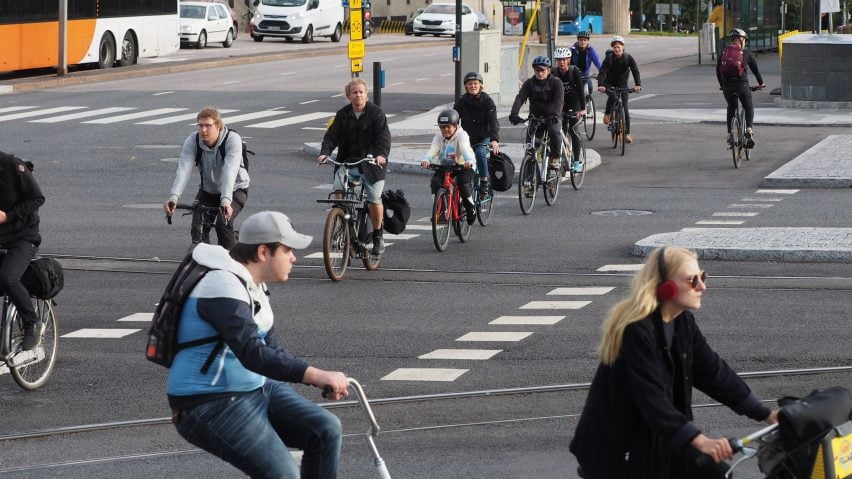

Cycling
Environment
Cleaner Air
Bicycles don’t add pollution to the atmosphere A typical passenger vehicle emitting almost five metric tons of carbon dioxide a year from burning fuel
Less Noise
Clamor cars make creates noise pollution. These disturbing sounds have an environmental impact, affecting ecosystems and causing health problems for people. Replacing noisy vehicles with quiet bikes results in less engine noise and traffic congestion

Physical Fitness
Health
Cleaner Air
